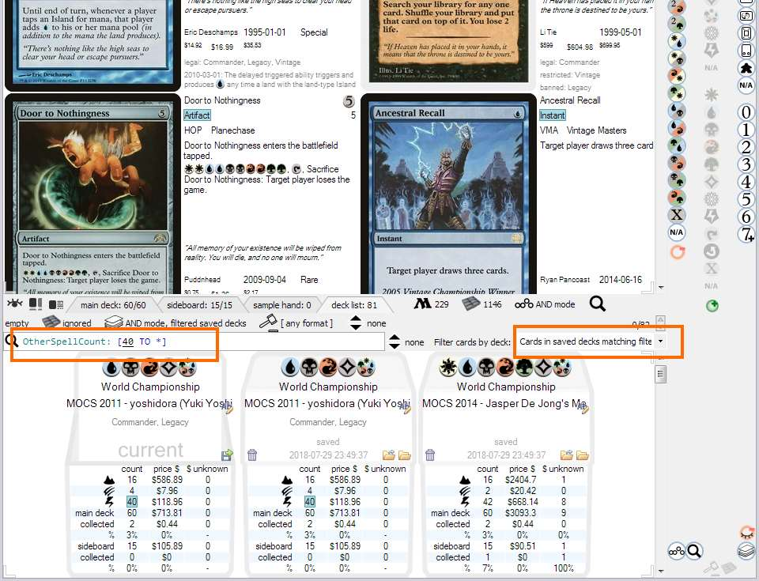

Deck list
{kind=link}
It is basically the list of decks saved within application.
Current deck
The first deck in the list is the current opened deck.
It changes whenever you add or remove cards from deck as shown here. To save the current deck use save button below current deck's name field. This
will add a saved deck to the list.
Filter decks
There is a separate search bar to filter the list of saved decks. Besides finding certain decks, it can be used to search cards based on their presence in certain decks.
{kind=link}
To do this use Filter cards by deck menu in deck list tab. It supports two modes:
- Show cards from currently edited deck
- Show cards from any saved deck matching search criteria for decks
Deck as an arbitrary collection of cards
You can think of decks as tags being put on cards to enable filtering by those tags by using search text input in
deck list panel. For instance, you can create a deck called Wishlist, then another one called For sale.
Another example of an artificial deck would be Perfect conditon or Damaged.